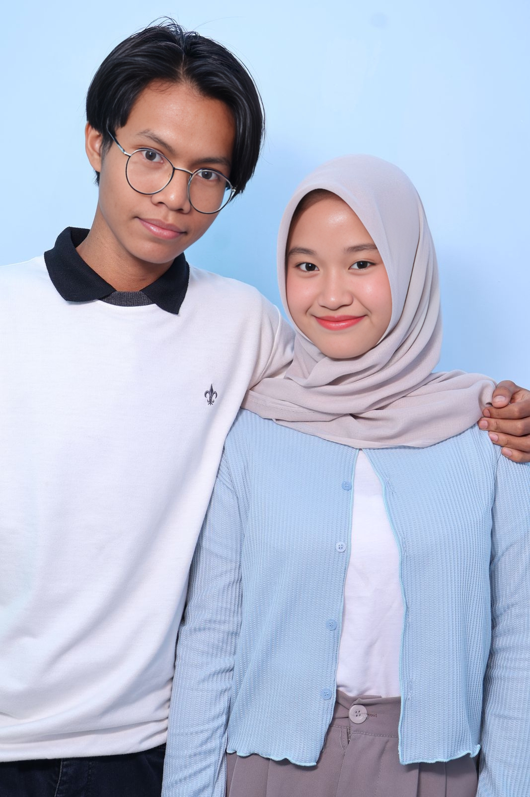

Our Story
Pertama-tama, selamat ya udah lewatin semua rintangan akademik ini, yang kamu dengan bekerja keras untuk menyelesaikannya, kamu sangat hebat bisa melakukannya sendiri.
Kamu pernah bertanya kenapa aku ngomong seperti itu ke orang itu, aku tau rasanya benar-benar sakit dikhianati oleh sesorang, bahkan oleh orang yang kamu sayang, atau pernah sayang.
Aku melakukan itu karena selama aku mau mendapatkan kamu kembali, dengan usaha berbulan-bulan tanpa dipandang menyesalku, kamu tidak pernah melihat penyesalanku saat terbilang putus di siang itu.
Dan aku ngga punya teman bicara selain kamu, jadi aku mencoba minta saran dengannya, yang membuatku terbawa suasana jadi memberikan kata-kata buruk padamu, tapi tak pernah lupa aku gaungkan di chat itu, aku benar benar cinta padamu, tapi apa boleh buat, dia ngga jaga rahasia, dan seharusnya juga aku ngga ngomongin kamu dari belakang, dan aku pun berniat jujur untuk memberikan semua salinan chatnya agar kamu tahu apa saja yang aku bilang ke dia.
Tapi tolong ngertiin aku kenapa aku sampe aku lakuin itu, aku juga ngerti kamu kenapa lakuin ini semua, kamu merasa sendirian, takut tak menentu, bingung, hampir tidak percaya padaku, aku ngga marah soal itu, seharusnya aku ngga ngomong gitu, maaf chat ku dengannya buat kamu sakit hati sampai sekarang.
Tapi bukankah tidak adil, disaat kamu billing ribuan maaf, aku selalu meyakinkan kamu untuk tetap bersama, namun kamu disaat aku lepas kendali 1 kali kamu langsung meng iyakan itu, alasan aku bilang kita pisah, karena saat itu aku di desak terus olehmu sehingga aku lepas kendali, karena ada rasa tak dihargai karena mempertahankan kamu.
Melihatmu sedih terus karena aku, aku bingung mau marah karena tidak dihargai, atau aku ikut sedih saat liat kamu selalu murung saat kita nonton di hari itu, aku juga banyak pikiran saat itu, maaf, aku jadi berbicara begitu disaat itu, seharusnya aku nenangin kamu.
Padahal sebenarnya aku tidak pernah benar-benar mau ninggalin kamu, bisakah kamu melihat dari niatku, bukan cuma kata-kata?
Tapi aku tau kenapa kamu begitu, karena kamu wanita hebat, harga dirimu tersakiti, karena kamu tau kamu sedang dalam keadaan sedih dan hampir tidak bisa apa-apa, sehingga kamu ambil keputusan untuk tetap dekat, tapi hati kita tak sedekat seperti dulu saat kita pacaran, aku benar-benar minta maaf membuatmu di dalam posisi itu, padahal diriku yang lain sangat mencintaimu, aku tidak tahu kenapa diriku yang satunya sangat marah padamu.
Kini aku tahu kenapa dan diriku telah berdamai, amarah itu telah usai hilang ditelan sayangku padamu.
Dan aku benar-benar minta maaf, bukan sekedar tulisan, tapi tulus, kuyakin selama ini kamu sudah lihat apa saja yang kulakukan untukmu demi dimaafkan.
Karena yg aku lakukan ini adalah yang paling niat seumur hidupku.
Mencintai Kamu
